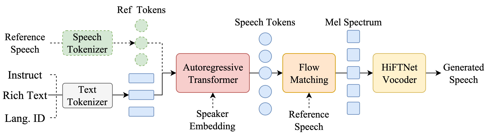
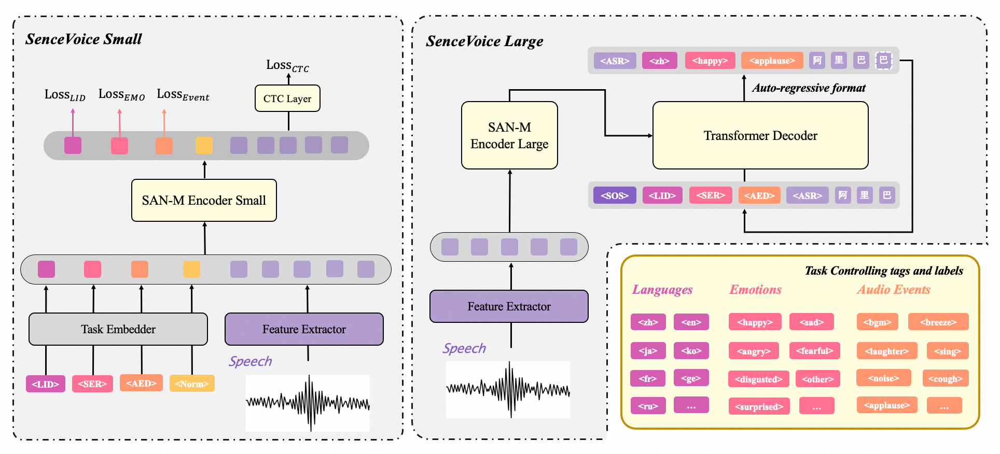
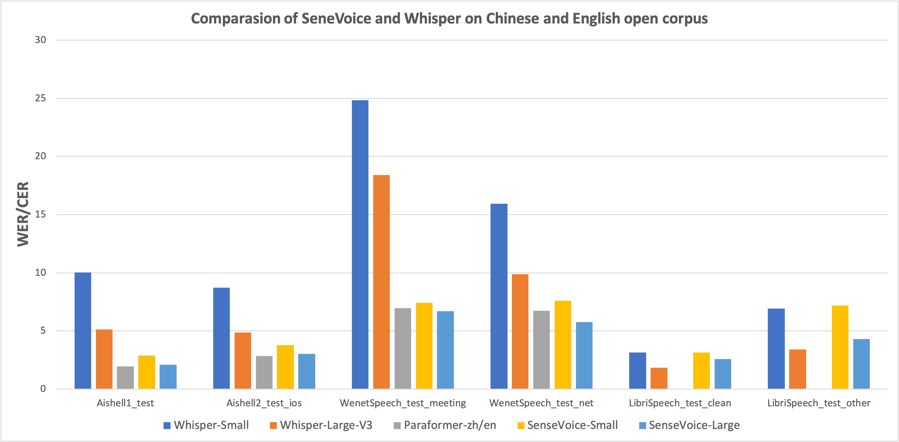
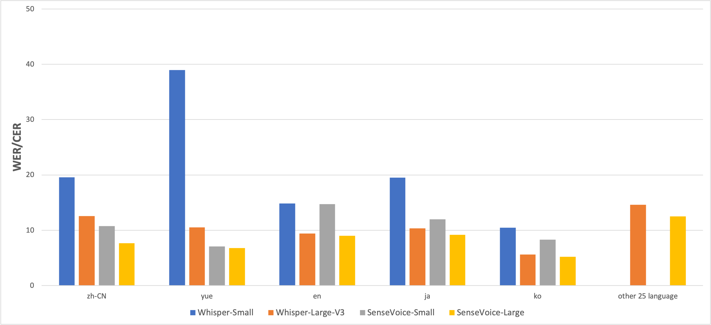
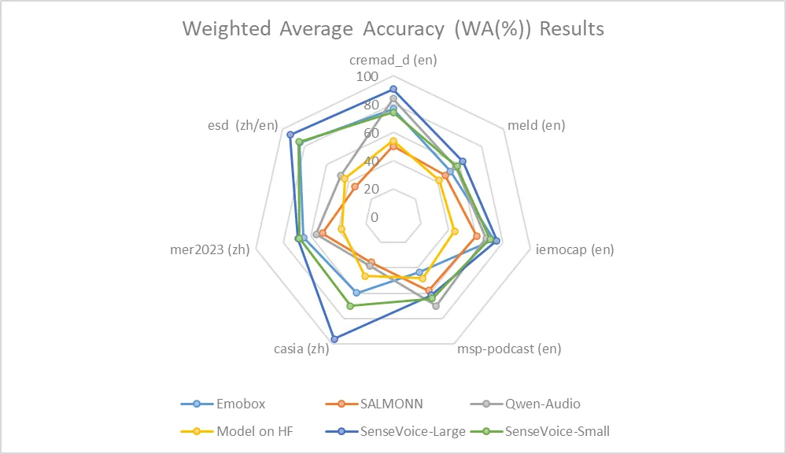
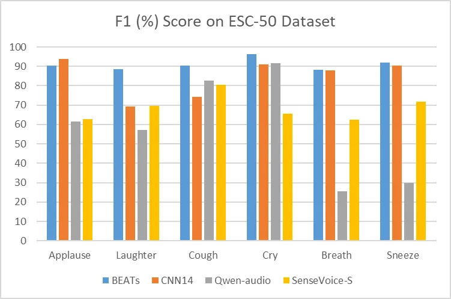
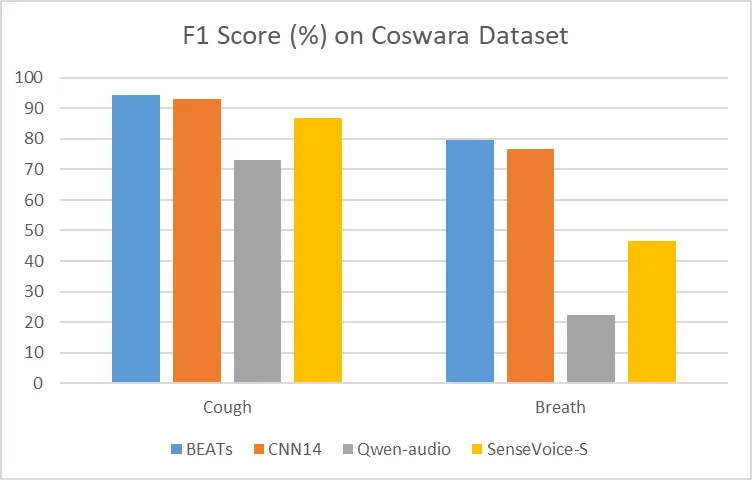
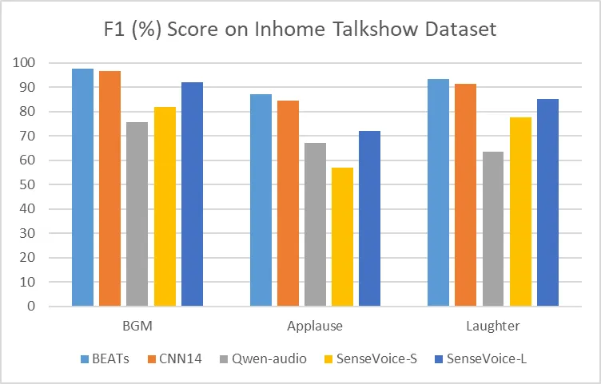

FunAudioLLM: Fundamental Voice Understanding and Generating Models for Natural Interaction Between Humans and LLMs
[Paper] [Code] [HuggingFace] [ModelScope]
FunAudioLLM Team
Tongyi Speech Lab, Alibaba Group
Abstract. We introduce FunAudioLLM, ....
Contents
Overview of CosyVoice

Figure 1. An overview of the CosyVoice Models at the inference stage. In summary, CosyVoice consists of an autoregressive transformer to generate corresponding speech tokens for input text, an ODE-based diffusion model, flow matching, to reconstruct Mel spectram from the generated speech tokens, and a HiFiGAN based vocoder to synthesize waveforms. Dashed modules are optional in specific model usages, such as cross-lingual, SFT inference and so on.
Multi-lingual Voice Generation
| Language | Speaker | Text | Audio |
|---|---|---|---|
| ZH | Female | 我是通义实验室语音团队全新推出的生成式语音大模型，提供舒适自然的语音合成能力。 | |
| Male | 我是通义实验室语音团队全新推出的生成式语音大模型，提供舒适自然的语音合成能力。 | ||
| EN | Female | I am the latest generative text to speech model launched by the Tongyi speech team, offering comfortable and natural speech synthesis capabilities. | |
| Male | I am the latest generative text to speech model launched by the Tongyi speech team, offering comfortable and natural speech synthesis capabilities. | ||
| JP | Male | 私は通義ラボ音声チームによって新たにリリースされた生成型音声大規模モデルで、快適で自然な音声合成能力を提供します。 | |
| Yue | Female | 我是通义实验室语音团队全新推出的生成式语音大模型，提供舒适自然的语音合成能力。 | |
| KO | Female | 저는 통의 연구소 음성 팀이 새롭게 공개한 생성형 음성 모델이며, 부드럽고 자연스러운 음성 합성 경험을 제공하도록 설계되었습니다. |
Zero-shot In-context Generation
| Language | Prompt | Generated 1 | Generated 2 |
|---|---|---|---|
| ZH | 随着大军缓缓前进，他忍不住琢磨起了回京之后会被派到什么艰苦的地方。顶缸。要知道皇帝一向就是这么干的，几乎没让他过过什么安生日子。 |
想着即将到来的未知与挑战，他的心中不禁泛起一丝苦涩，但也很快被坚毅取代。这次，无论是荒凉的边陲小镇，还是险象环生的前线阵地，他都已做好准备，迎接新的使命。 |
大军的步伐愈发坚定，每一步都踏出了他们对未来的期许与决心。而他，作为这铁血军团的一员，更是心怀壮志，期待着用自己的双手，再次书写一段传奇，证明给所有人看。 |
希望你以后能够做的比我还好呦。 |
收到好友从远方寄来的生日礼物，那份意外的惊喜与深深的祝福让我心中充满了甜蜜的快乐，笑容如花儿般绽放。 |
漫步在金秋的枫林中，阳光透过斑斓的叶片洒在身上，清风拂面，我陶醉在这宁静而美好的时光里，快乐得几乎要翩翩起舞。 |
|
我的故事，过程很美，而结局却满是悲伤。 |
望着空荡荡的房间，昔日共度的美好时光历历在目，如今却物是人非，泪水止不住地滑落，心如刀割。 |
得知挚爱的宠物因病离世，我沉浸在无尽的哀伤中，那熟悉的身影、温顺的眼神仿佛还在眼前，令人心碎不已。 |
|
多少年了，还没有人敢这样对我拍桌子瞪眼睛。 |
目睹不法分子公然破坏公共设施，无视社会规则，我怒不可遏，心中充满了对这种恶劣行径的强烈谴责与愤慨。 |
得知商家以次充好，欺诈消费者，我怒火中烧，对于这种丧失诚信、侵害消费者权益的行为感到极度愤恨，誓要讨回公道。 |
|
| EN | I think people online have actually assembled videos showing every launch and it just gets like crazy fast as you get to twenty twenty three. So yeah, so we've done a nineteen three flight. We're now qualifying Falcon nie to be able to do forty flights. |
In the quest for sustainable energy, Tesla leads the charge; every electric vehicle on the road is an emissary saluting clearer skies, collectively weaving the tapestry of our planet's verdant future. |
From space exploration to subterranean tunnels, from AI to the neurotechnology revolution, my pursuit transcends mere technological frontiers; it's about carving out unprecedented realms of existence and progress for mankind. |
I'm so happy I got to do this. I really wanted to work with Tom Hooper. I know that he records live and he films and records your vocals live. It's such an interesting thing to me and I wanted to see him work. I had actually done screen tests for Les Mis. |
Every stage is a fresh adventure, and as the lights ignite, it's an unspoken pact between me and the audience, weaving unforgettable nights where dreams meet reality. |
Creating is my way of extracting magic from life's moments. Whether it's joy or tears, I embrace it all, transmuting those feelings into notes, with the hope of touching the depths of every soul. |
|
| JP | の匂いを嗅ぎつけて現場に赴き、モテる感覚の全てを使って犯人を割り出し、食らいついたら相手が観念するまで証拠という鋭い歯を食い込ませるそれが探偵さん。 |
投資で安定収入を得たい人達で情報交換をしませんか？ |
自分でもユナに提案してからやっぱり暑すぎるか。 |
どうして、どうしてお姉ちゃんを助けてくれなかったの？ |
クレジットカード現金化の店舗のスタッフブログです。 |
某ハンドメイドブログの別館ともなっております。 |
|
| Yue | 结果学校苦心安排佢哋自行排成三队，走到行列最前端。 |
不可能吧我挂住你啦点算啊，你又唔接我电话。 |
老公，今晚石河子好似有六级地震。 |
你系男嘅定系女嘅，你叫咩名，边度嚟噶？ |
衞生署提醒市民，近期流感病例增加，建議出門佩戴口罩，留意個人衛生。 |
呢度嘅风景真係靓到爆，连带咁多年嚟我见过嘅都比唔上。 |
|
| KO | 물고기들은 빗물이 물 위로 떨어지는 소리에 놀라 달아나 버리지. 그래서 비가 그친 후엔 낚시하기 딱 좋아. |
여기에 가만히 서 있는다고 상대가 찾아오진 않아. |
기억해둬, 친구, 난 언젠가 이 세상을 정복할 사람이야! |
고작 빗방울로 호들갑은, 아직 번개도 치지 않았는데. |
하늘이 맑다고 번개는 숨길 수 없고, 비가 내리지 않아도 신의 번개를 내릴 수 있다. |
비록 몸과 꿈은 사라졌어도, 그녀는 결국 신성한 벚나무가 되었다. |
Instructed Voice Generation
Speaker Identity Control
| Instruction | Generated |
|---|---|
| Theo 'Crimson', is a fiery, passionate rebel leader. Fights with fervor for justice, but struggles with impulsiveness. (翻译：西奥（Theo）‘绯红’，是一位火热、充满激情的反叛领袖。他为正义而战，斗志高昂，但容易冲动。) |
人总是要为自己所做的事情付出代价的，我不怕付出代价，只是不愿意让无辜的人来陪葬。 |
| Kai 'Torrent', is a cool-headed, tactical water mage who plans his moves carefully. A soothing presence with hidden depths. (翻译：凯（Kai）‘激流’，是一位冷静、讲究策略的水法师，仔细规划每一步行动。他是一个具有安抚作用的存在，内心深藏深度。) |
一个人最大的悲哀，不是牺牲，而是看着自己辛辛苦苦得来的一切，最后变成了别人的功劳。 |
| Zara 'Wildfire', is an impulsive, fearless firebrand who loves a challenge. Her bravery inspires others, though she often acts recklessly. (翻译：扎拉（Wildfire）‘狂野之火’，是一个冲动而无畏的煽动者，她热爱挑战。她的勇敢鼓舞了他人，尽管她的行为常常是鲁莽的。) |
真正的速度你是看不见的，就像风起云涌、日落月升，就像你不知道树叶什么时候变黄，不知道你的孩子什么时候长出第一颗牙来。 |
| Selene 'Moonshade', is a mysterious, elegant dancer with a connection to the night. Her movements are both mesmerizing and deadly. (翻译：赛琳娜（Selene）‘月影’，是一位神秘、优雅的舞者，与夜晚有着特殊的联系。她的舞姿既令人着迷又致命。) |
我们走的每一步，都是我们策略的一部分；你看到的所有一切，包括我此刻与你交谈，所做的一切，所说的每一句话，都有深远的含义。 |
| Priya, the humanitarian doctor, heals wounds of the world with her boundless empathy and skill. (翻译：普莉娅（Priya），这位人道主义医生，用她无尽的同情心和高超的医术治愈着世界的创伤。) |
You don't know about real loss, because it only occurs when you've loved something more than you love yourself. |
| Ivan, the old sea captain, navigates life's storms with timeless wisdom and a heart of gold. (翻译：伊凡（Ivan），这位老船长，用永恒的智慧和一颗善良的心驾驭人生的风暴。) |
Hope is a good thing, maybe the best of things, and no good thing ever dies. |
Fine-grained Control
| Text | Generated |
|---|---|
| [laughter]有时候，最简单的事情[laughter]能让我们笑得最开心，就像是无意中听到的一个傻笑话[laughter]。 | |
| 他搞的一个恶作剧，让大家<laughter>忍俊不禁</laughter>。 | |
| 成功并不是预先设定的终点，它需要你一步一步地<strong>努力</strong>，持续地<strong>努力</strong>，最终将梦想变成现实。 | |
| 当你深入了解一个文化[breath]，你会开始欣赏那些最初看似平凡无奇的细节[breath]，并且通过这些细节，逐渐理解这个文化的精神。 | |
| Well that's kind of scary [laughter] I'm not near that age [laughter] I'm way over it but I do have children to think about you know. | |
| Well that pretty much covers <laughter>the subject</laughter> well thanks for calling me. | |
| The team's <strong>unity</strong> and <strong>resilience</strong> helped them win the championship. | |
| I don't think I over eat yeah [breath] and um I do exercise regularly. |
Style Control
| Instruction | Generated |
|---|---|
| A female speaker with normal pitch and normal speaking rate. | 他讲的冷笑话虽然老套，但仍然让大家笑个不停。 |
| A female speaker with high pitch, normal speaking rate, and happy emotion. | 他讲的冷笑话虽然老套，但仍然让大家笑个不停。 |
| A male speaker with low pitch, fast speaking rate, and angry emotion. | 生活的美不在于宏大的时刻，而在于那些我们经常忽视的简单而日常的奇迹。 |
| A female speaker with normal pitch, slow speaking rate, and sad emotion. | 当我们离开这个世界时，人们记住的不是我们积累的财物，而是我们对他们生活的影响和我们共享的爱。 |
| A male speaker with low pitch, slow speaking rate, and fearful emotion. | 深夜独行于荒芜的小巷，忽闻身后传来诡异的脚步声，我寒毛直竖，心跳如雷，无法抑制对未知危险的深深恐惧。 |
| A male speaker with low pitch, slow speaking rate, and sad emotion. | Every choice we make, every path we take, molds our identity. We are the sum of our choices, and it's up to us to make them meaningful. |
| A female speaker with angry emotion. | I’m really struggling to stay calm right now because what you did was totally out of line! |
Emotionally Expressive Voice Generation
| Emotion | Generated 1 | Generated 2 |
|---|---|---|
| Neutral | 我是通义实验室语音团队全新推出的生成式语音大模型，提供舒适自然的语音合成能力。 |
西红柿炒鸡蛋是一道简单又经典的家常菜。 |
| Sad | 等你熬过那些孤独无助的时刻，你才会发现，原来自己并没有想象中那么脆弱。原来一个人，也可以活成千军万马的模样。 |
我可以安慰很多人，但就是不能安慰自己那颗千疮百孔的心。总有一些人会慢慢淡出你的生活。你要学会接受，而不是怀念。有些事。不管我们如何努力，回不去就是回不去了。我们漫长的岁月中有太多的过客，有太多的无奈。 |
| Happy | 小丽抿着嘴，弓着腰，蹑手蹑脚地，一步一步慢慢地靠近它。靠近了，靠近了，又见她悄悄地将右手伸向蝴蝶，张开的两个手指一合，夹住了粉蝶的翅膀。小丽高兴得又蹦又跳。 |
除夕晚上，儿子孙子都来到她身边，她满脸皱纹都舒展开了，就像盛开的菊花瓣，每根皱纹里都洋溢着笑意。 |
| Angry | 突然有一个不认识的西班牙老粗，捶着台子站了起来，涨红着脸，激动的演说着，他说得口沫横飞，气得双眼要炸了似的弹出着，两手又挥又举，恨不能表达他的愤怒。 |
无可抑制的愤怒在他的血管中奔腾翻滚着，它一阵飓风般的疯狂奔跑，没有任何事情能挡它，它看见两个那种恶魔吸附在马上，还有两条狗。他是一个狂魔，也是一阵毁灭一切的龙卷风。 |
| Fearful | 在漆黑的夜晚，月光洒在寂静的街道上，一道身影颤抖着站在破旧的木门前。他的名字叫做李明，一个平凡的邮差，此刻却满眼恐惧地盯着那扇似乎隐藏着无尽黑暗的门。 |
他试图在心中寻找一丝勇气，回忆起过去的日子里，那些快乐而平凡的日子。他试图用这些回忆来驱散心中的恐惧。然而，那扇破旧的木门似乎在呼唤着他，吸引着他走向黑暗。李明的心跳如同在狂奔的野马，无法控制。 |
Speaker Fine-tune
| Speaker | Text | Generated |
|---|---|---|
| Speaker 1 | 这也不知道为啥哈，反正，它刚出来的时候儿叫台湾手抓饼，现在就是可能这个，大陆这边儿都给改良了，整的都像那种，烙的那种，鸡蛋灌饼儿似的啦，哎呦，就有那种感觉哈。 | |
| Speaker 2 | 明月几时有？把酒问青天。不知天上宫阙，今夕是何年。我欲乘风归去，又恐琼楼玉宇，高处不胜寒。起舞弄清影，何似在人间。 | |
| Speaker 3 | 生活不在于拥有最好的一切，而在于把一切都变得最好。别怕失败，它是通往成功的必经之路。每一次跌倒，都是为了更坚强地站起。梦想不是等来的，是追出来的。迈出那一步，让汗水成为你成功的见证！ | |
| Speaker 4 | In the heart of the whispering woods, Ellie the adventurous elf put on her leafy green cloak, picking up her map sprinkled with mystical runes and set out on a quest to find the enchanted crystal that was said to hold the key to endless joy and laughter. | |
| Speaker 5 | In the stately grandeur of Pemberley, Elizabeth Bennet's prejudices began to crumble as she gazed upon the portrait of Mr. Darcy, realizing for the first time that the true measure of a man lay not in the fineries of his estate, but in the depth of his character and the kindness he bestowed upon those of lower station. |
* Due to copyright restrictions, we are unable to open source the SFT models, but we will release the SFT training script. You can use this script to perform SFT on your own data.
Demo
| Text | Audio |
|---|---|
| 神雕侠侣，第九回，百计避敌。 - 陆无双正自惶急，听他忽问傻话，怒道：“傻蛋！又胡说甚么？” - 杨过笑道：“咱们来玩拜天地成亲，你扮新娘子好不好？那才叫美呢！脸上披了红布，别人说什么也瞧你不见。” - 陆无双一怔，道：“你教我扮新娘子躲过师父？” - 杨过嘻嘻笑道：“我不知道，你扮新娘子，我就扮新官人。” |
Overview of SenseVoice

Figure 2. An overview of the SenseVoice voice understanding model.
Multilingaul Speech Recognition


Figure 3. Comparasion of SenseVoice and Whisper on multilingual speech recognition beachmarks.
| Wav | Without Textnorm | With Textnorm |
|---|---|---|
| <|zh|><|NEUTRAL|><|Speech|><|wotextnorm|>开放时间早上九点至下午五点 | <|zh|><|NEUTRAL|><|Speech|><|withtextnorm|>开放时间早上9点至下午5点。 | |
| <|yue|><|NEUTRAL|><|Speech|><|wotextnorm|>呢几个字都表达唔到我想讲嘅意思 | <|yue|><|NEUTRAL|><|Speech|><|withtextnorm|>呢几个字都表达唔到，我想讲嘅意思。 | |
| <|en|><|NEUTRAL|><|Speech|><|wotextnorm|>the tribal chieftain called for the boy and presented him with fifty pieces of gold | <|en|><|NEUTRAL|><|Speech|><|withtextnorm|>The tribal chieftain called for the boy and presented him with 50 pieces of gold. | |
| <|ja|><|NEUTRAL|><|Speech|><|wotextnorm|>うちの中学は弁当制で持っていけない場合は50円の学校販売のパンを買う | <|ja|><|NEUTRAL|><|Speech|><|withtextnorm|>うちの中学は弁当制で持っていけない 場合は、50 円の学校販売の パンを買う。 | |
| <|ko|><|NEUTRAL|><|Speech|><|wotextnorm|>조 금만 생각 을 하 면서 살 면 훨씬 편할 거야 | <|ko|><|NEUTRAL|><|Speech|><|withtextnorm|>조 금만 생각 을 하 면서 살 면 훨씬 편할 거야. |
Speech Emotion Recognition
SenseVoice can also be used for discrete emotion recognition. Happy, Sad, Angry and Neutral are supported. We evaluate it on 7 popular emotion recognition dataset. The SenseVoice-Large can approaching or exceeding the SOTA results on most datasets even without target corpus finetuning.

Figure 4. Weighted Average Accuracy (WA(%)) comparison on 7 emotion recognition datasets. EmoBox is a recent speech emotion recognition benchmark based on Self-Supervised Models and Whisper. Model on HF stands for the most popular speech emotion recognition model on HuggingFace.
| Audio | SenseVoice-Large | SenseVoice-Small |
|---|---|---|
| <|zh|><|Speech|>英国的哲学家曾经说过。<|/Speech|><|HAPPY|> | <|zh|><|HAPPY|><|Speech|>英国的哲学家曾经说过。 | |
| <|zh|><|Speech|>英国的哲学家曾经说过。<|/Speech|><|SAD|> | <|zh|><|SAD|><|Speech|>英国的哲学家曾经说过。 | |
| <|zh|><|Speech|>英国的哲学家曾经说过。<|/Speech|><|ANGRY|> | <|zh|><|ANGRY|><|Speech|>英国的哲学家曾经说过。 | |
| <|zh|><|Speech|>英国的哲学家曾经说过。<|/Speech|><|NEUTRAL|> | <|zh|><|NEUTRAL|><|Speech|>英国的哲学家曾经说过。 | |
| <|en|><|Speech|>I did go, and made many prisoners. <|/Speech|><|HAPPY|> | <|en|><|HAPPY|><|Speech|>I did go and made many prisoners. | |
| <|en|><|Speech|>I did go, and made many prisoners. <|/Speech|><|SAD|> | <|en|><|SAD|><|Speech|>I did go and made many prisoners. | |
| <|en|><|Speech|>I did go, and made many prisoners. <|/Speech|><|ANGRY|> | <|en|><|ANGRY|><|Speech|>I did go and made many prisoners. | |
| <|en|>I did go, and made many prisoners. <|/Speech|><|NEUTRAL|> | <|en|><|NEUTRAL|><|Speech|>I did go and made many prisoners. |
Audio Events Classification
Both SenseVoice-Small and SenseVoice-Large model can detect the audio event in the speech, including music, applause, laughter. The SenseVoice-Large can predict the start and end position of the audio event, while the SenseVoice Small can only predict what happned (only one event) in the audio, however, it can detect more events, such as coughing, sneezing, breathing and crying which could occur during human-machine interaction.
| Audio | SenseVoice-Large | SenseVoice-Small |
|---|---|---|
| <|en|><|Speech|> Senior staff, Principal Doris Jackson, Wakefield faculty, and of course, my fellow classmates, <|Applause|> I <|/Applause|> am honored to have been chosen to speak before my classmates as well as students across America today.<|/Speech|> | <|en|><|Applause|> Senior staff, principalipal Doris Jackson, Wake Food faculty, and, of course, my fellow classmates, I am honored to have been chosen to speak before my classmates as well as students across America today. | |
| <|zh|><|Speech|>啊，那你男朋友能够记得吗？还好吧，这个是你男朋友吗？他喜欢吃什么？<|Laughter|><|/Laughter|><|/Speech|> | <|zh|><|Laughter|>啊，那你男朋友能够记得吗？还好吧，这个是你男朋友吗？她喜欢吃什么？ | |
| <|zh|><|Applause|><|Speech|>我起飞<|/Applause|>前没有扫二维码，我都在看彭于晏，<|Laughter|>我连<|/Laughter|>安全演示片我都没有看。所以我当时脑。<|/Speech|> | <|zh|><|Applause|>我起飞前没有扫二维码，我都在看彭于晏，我连安全演示片我都没有看，结以我当时脑。 |
Although the SenseVoice are trained on speech data, it can still classify the recording with only audio event. We compare the SenseVoice with the audio event detection models BEATS and PANNs on environment sound classification, baby cry/laugh detection, coughing detection and talkshow event detection.
| ESC-50 | Baby Cry Detection | Coswara | Inhome Talkshow |
|---|---|---|---|
|  |  |
 |  |
The audio events classification ability can prevent the model predicting unexisting word in the environment noisy recordings.
| Audio | Whisper | SenseVoice-Large | SenseVoice-Small |
|---|---|---|---|
| <|en|><|transcribe|><|notimestamps|> Thank you. | <|nospeech|><|Applause|><|/Applause|> | <|nospeech|><|Unknown_Emo|><|Applause|> | |
| <|en|><|transcribe|><|notimestamps|> laughing | <|nospeech|><|Laughter|><|/Laughter|> | <|nospeech|><|Unknown_Emo|><|Laughter|> | |
| <|en|><|transcribe|><|notimestamps|> Pfft. | <|nospeech|><|Unknown_Event|> | <|nospeech|><|Unknown_Emo|><|Cough|> | |
| <|en|><|transcribe|><|notimestamps|> <|en|><|transcribe|><|notimestamps|> I love you. | <|nospeech|><|Unknown_Event|> | <|nospeech|><|Unknown_Emo|><|Cry|> | |
| <|ja|><|transcribe|><|notimestamps|>ふーふーふー | <|nospeech|><|Unknown_Event|> | <|nospeech|><|Unknown_Emo|><|Breath|> | |
| <|en|><|transcribe|><|notimestamps|> I can't! | <|nospeech|><|Unknown_Event|> | <|en|><|Unknown_Emo|><|Sneeze|> | |
| <|en|><|transcribe|><|notimestamps|> so | <|nospeech|><|Applause|><|/Applause|> | <|nospeech|><|Unknown_Emo|><|Unknown_Event|> |
Rich Transcribe Demo Samples
| Wav | Whisper-Lagre-V3 results | SenseVoice-Large results | SenseVoice-Small results |
|---|---|---|---|
| Tangri with his song, Heaven. Heaven. so Yeah! Absolute shock, but in a great way. Wow. That was awesome. That was awesome. What way to open a song. That was awesome. Awesome. I'd love to check out some more Mongolian throat singing stuff. That is correct, right? It is Mongolian. Let me know, I'd love to check out more. I think a lot of you want me to check out The Who. If you guys still want me to, I'd be more than happy to. so晚安的天空清的湖水啊滴滴的草原 That is incredible. That is incredible. For those of you who don't know what I'm saying right now, the way he can make it sound like he's finished a note, you know, he like lowers it so low you can't even hear the note anymore. And then he brings it back and you can see his mouth still open. The way he can like finish a note but not finish it i don't know how to explain that that is an incredible talent that is amazing Hey | Tangree with his song, Heaven. 🎼 啊。🎵 Absolutely shocked but in a great way. That was awesome, 🎶 that was awesome 😊 what way to open a song, that was awesome, awesome, I'd love to check out some more Mongolian throat singing stuff, that is correct right, it is Mongolian. Let me know I'd love to check out more I think a lot of you want to check out the Who if you guys still want me to I'd be more than happy to. 🎼 蓝蓝的天空，清清的湖水啊，绿绿的草原。That is incredible that is incredible for those of you who don't know what I'm saying right now the way he can make it sound like he's finished a note you know he like lowers it so low you can't even hear the note anymore and then he brings it back and you can see his mouth still open the way it makes the way he can like finish a note but not finish it . 😡 I don't know how to explain that that is an incredible talent that is amazing. 😊 这是我的家， 哎。😊👏 | Tangry with his song, heaven. 🎼 Absolute shocked but in a great way my. 😊That was awesome, that was awesome what way to open a song that was awesome, awesome, 😡 I'd love to check out some more Moolian fruiting and stuff that is correct right it is Monolian let me know I'd love to check out more I think a lot of you want me to check out the who if you guys still want me to I'd be more than happy to. 🎼 蓝蓝的天空。清清的湖水呀，绿绿的草原。😔 That is incredible, that is incredible that is incredible for those of you who don't know what I'm saying right now, the way he can make it sound like he's finished a note, you know, he like lowers it's so low you you can't even. Hear the note anymore and then he brings it back and you can see his mouth still open the way it makes the way he can like finish a note but not finish it, I don't know how to explain that that is an incredible talent that is amazing. 😡 🎼 这是我的家哎。 | |
| 哈喽各位这里是音乐萌泰堂我是小凡几日死生命四之后今天我们又有三首流行歌曲被日本看上了到底被注入了怎样的灵魂我们一起来听一下吧东宝石的这首野狼disco堪称今年最洗脑的神剧前段时间不但风靡大学校园也出了正宗的岗位教程没想到转眼间这首歌就被日语看上了被软萌的罗丽音一唱我竟然有种在停留暗循环的感觉嘘が本当か思いっきりして誰も忘れた君は一番だ知ってるからせーのこっちに尿もた前段这段时间由音雀诗听书品赵芳静演唱的古风电音《盲正》也凭借其闹旋律在短时间内成功刷屏这次更是被翻唱成日语版走红网络短短一周的时间视频已经快要达到200万的播放了幻想か 一粒の涙そんなの無理だよ私だけじゃ生きてない あなたのことを思えば胸がギュッとなんだかずっと痛いやこんなのない还记得那首欢专歌这次也被小姐姐翻唱成了日语版不过对于这首歌还是有些争议有网友表示空灵的嗓音也许更适合这首歌的曲风请不得自由一起来听听这首日语版的歌曲吧喜欢的小伙伴记得关注我们下期见拜拜 星の中へ 全速で飛んで | 君の虜になってしまえば、きっと。🎵哈喽各位音乐萌太郎，我是小凡，继绿色生命4之后，今天我们又有三首流行歌曲被日本看上了，到底被注入了怎样的灵魂，我们一起来听一下吧。😊 东宝师的这首野狼disco，堪称今年最洗脑的神曲。前段时间不但风靡大学校园，就连陈伟霆也出了正宗的岗位教程。没想到转眼间，这首歌却被日语看上了，被软萌的罗丽音一唱，我竟然有种在听恋爱循环的感觉。😊 🎶 思いっきりして誰も忘れた君は一番だ知ってるからせーの、こっち見ようか？いてこっちに虹を描くいいね逆にこっちに虹を描いてこっちに目を描くすごい！😊 🎵前段时间，由音雀视听出品，赵方婧演唱的古风电音芒种，也凭借洗脑旋律在短时间内成功刷屏，这次更是被翻唱成日语版，走红网络。短短一周的时间，视频已经快要达到200万的播放了。🎶 😊 そんなの無理だよ、私だけじゃ生きてらんないあなたのことを。🎼 🎵 还记得那首换装歌曲素吗？这次也被小姐姐翻唱成了日语版，不过对于这首歌还是有些争议。有网友表示，空灵的嗓音也许更适合这首歌的曲风。节目最后一起来听这首日语版的歌曲吧，喜欢的小伙伴记得关注我们，下期见，拜拜。🎶 😊 星の中へ迅速で飛んで。🎼 | 🎼😊君の ト子になってし。电是音乐萌太头，我是小凡，接绿色生僻四之好。今天我们又有三首流行歌曲，被日本看上了，到底被注入了怎样的灵魂，我们一起来听一下吧。🎼😊 董宝石的这首野狼disco堪称今年最洗脑的神曲，前段时间不断风靡大学校园，却连陈伟霆也出了正宗的岗位教程。没想到转眼间，这首歌却被日语看上了，被软萌的萝莉音遗唱，我竟然有种在听恋爱循环的感觉。🎼 思いきり して 誰 を 忘れ た 君 は 一番 だ してる からせ の こっちげ に をこっちに虹字を 描くいいね 逆 に こっちに虹をかいで こっちにを 絵描くすごい。🎼😊 前段时间，由音雀实听书品赵方婧演唱的古风电音芒种，以凭借洗脑旋律在短时间内成功刷屏，这次更是悲愤战成日语版走红网络。短短一周的时间，视频已经快要达到200万的播放了。後 そんな の 無理だの 私 だけ じゃ 生き てらない あなた の ことも。と 思えば 胸れが けっと なん だか 尊 いた いやんな の。🎼😊 还记得那首换装歌曲素吗？这次也被小姐姐翻唱成了日语版。不过对于这首歌还是有些争议。有网友表，空里的嗓音也许更适合这首歌的曲风，最后一起来听听这首日语版的歌曲吧，喜欢的小伙伴记得关注，我们下期见，拜拜。星 の 中 へ 迅息 で そんね。 | |
| 高校生探偵 工藤真一幼馴染で同級生の毛利蘭と遊園地に遊びに行って黒ずくめの男の怪しげな取引現場を目撃した 取引を見るの夢中になっていた俺は背後から近づいてくるもう一人の仲間に気づかなかった俺はその男に毒薬を飲まされ目が覚めたら体が縮んでしまっていた クドウ・シンイチが生きていると奴らにばれたら、また命が狙われ、周りの人間にも危害が及ぶ。アガサ博士の助言で正体を隠すことにした。 ランの家お前は何をしているの?この時、私は彼女を殺した。このゲームは、ゲームの中で最も有名なゲームです。面倒なことになるんだよな小さくなっても頭脳は同じ迷宮なしの名探偵真実は今のyou | 🎵高校生探偵工藤真一 幼馴染で同級生の毛利蘭と遊園地に遊びに行って、黒ずくめの男の怪しげな取引現場を目撃した。 取引を見るのに夢中になっていた俺は背後から近づいてくるもう一人の仲間に気づかなかった俺はその男に毒薬を飲まされ目が覚めたら体が縮んでしまっていた。 工藤新一が生きていると奴らにバレたら、また命が狙われ、周りの人間にも危害が及ぶアガサ博士の助言で正体を隠すことに。 た 俺はランに名前を聞かれて、とっさに江戸川コナンと名乗り、奴らの情報をつかむために父親が探偵をやっているランの家に転がり込んだ。 俺の正体を知っているのは、アガサ博士、俺の両親、西野高校生探偵の服部平次、同級生の灰原愛、アガサ博士が小さくなった俺。 のためにいろんな発明品を作ってくれた 灰原は黒ずくめの組織のメンバーだったが組織から逃げ出す際、俺が飲まされたのと同じ薬を。 飲んで体が縮んでしまっ た さらにもう一人怪盗キッド奴 が絡んでくると。 面倒なことになるんだよな 小さくなっても頭脳は同じ 迷宮羅師の名探偵真実はみんなの！🎶 | 🎼高校生探偵工藤信一 幼馴人で同級生の毛ー利蘭ンと遊園地に遊びに行 って 黒づくめの男の怪しげな取引現場を目撃した。 🎼取引を見るのに夢中になっていた俺は、背後から近づいてからもう一人の仲間に気づかなかった 俺はその男に毒薬を飲まされ、 目が覚めたら 体が縮んでしまっていた！ 🎼工藤 新一 が生き て いる 安ら に バレ たら、また 命 が 狙 われ、周り の 人間 に も 危害 が 及び、アサ 博士の 助言 で 正体 を 隠す ことに。 😡🎼俺 は 蘭ンに名前を 聞 かれ て、とっ嗟 に 江戸川コナンと 名乗り、奴ら の 情報 を掴む ため に、父親 が 探偵 をやっている蘭ン の 家 に 転がり 込ん だ。 🎼俺 の 正体 を 知っ て いる の は、ア笠瀬 博士、俺 の 両親、西野 高校生探偵 の 服部 平士 同級 生 の 灰原ラ愛 ア瀬 博士 が 小さくなった俺。 🎼のため に、いろんな 発明品を作って くれた ハ原は黒づくめの組織のメンバーだったが 組織から逃げ出際、俺 が飲まされ た のと 同じ薬よ。 🎼飲 んで 体 が 縮んでし まった さらに もう 一人 解答 切ッと奴 が 絡 ん で くる と。 🎼面倒なことになるんだよ 小さくなっても頭脳ンは同じ 永久らしの目探偵 真実は ！ | |
| 안녕하세요 저는 세범, 영원, 신화입니다. 자 여러분들 한 주간 잘 지내셨나요? 네 한 주간 잘 지냈을 것 생각이 들고요. 오늘은 어떤 영상을 불러 드릴 거냐 혹시 밴드 음악 좋아요? 네 약간 락 그런거? 그냥 밴드요 밴드 음악 밴드 음악이 락 아닌가요? 밴드 좋아하는 밴드 누구 있어요? 저요? 우리나라 아니죠? 아니요 상관없어요. 아 진짜요? 형은요? Ft. Island? 그래서 알았어요. 아무튼 그런 그룹들이 많이 있는데 일단 그런 관련된 중국에서도 밴드 관련된 프로그램이 있다고 해요. 그래서 그 프로그램 영상을 한번 만나볼건데 그렇게 감안해서 생각하시고 보면서 어떤 음악을 하는지 근데 또 밴드가 밴드라는 지칭하는 단어가 악기들이 들어가는 그런 연주잖아요 그래서 느낌이 다를지 안 다를지는 잘 모르겠는데 좀 비슷할 것 같아요 한번 보도록 하겠습니다 아 미디엠 미디엠인가? 뭐야 레이저야? 오오오오......여여여여.......와우! 와우! 수명이 | 안녕 하 세요 저는 새봄 영원 신화 입니다 여러분 들 한 주간 잘 지내 셨 나요? 😊 😀 오늘은 어떤 영상을 불러드릴 거냐 혹시 밴드 음악 좋아요 약간 락 그런거 그냥 밴드요 밴드 밴드 음악? 밴드 음악 좋아하는 밴드 누구 있어요 저요 우리나라 아니면 상관없어요 아 🎼🎵 그래서 그런 곡 들이 많이 있 는데 그런 관련 된 중국 에 서도 밴드 관련 된 🎶 프로그램 이 있 다고 해요？그래서, 그 프로그램 영상 을 한번 만나 볼 건데 그렇게 감안 해서 생각 하 시고, 보 면>서 어떤 음악 을 하나, 😊 또 밴드가 밴드라는 지칭하는 단어가 악기들이 들어가는 그런 연주잖아요 그래서 느낌이 다르지 안 다르지는 잘 모르겠는데 좀 비슷할 것 같아요 그래서 한번 보도록 하겠습니다. 😊 🎼 들어왔다 약간 갤러드, 온라인, 🎵 저 뒤에 사람 있는 게 신기해 화면이 아니라 이거 레이저인가요? 저렇게 조절이 가능해져요? 그래야 되 🎶 지요 😊 | 자 저 요새 안녕하세요~ 저는 세봄 영원 씨입니다 자 여러분들 한 조각간 잘 지내셨나요? 아 에 잘냈을 거 생이 들 오늘 은 어떤 영상 을 풀 드을 거냐혹시 밴드 음악 좋아요 약간 락 그런 거 그냥 밴드 밴드 밴드 음악. 😊 🎼 밴 드 밴 밴드 좋아하는 밴 누구 있어요 저요 뭐 우리나라 라오탕 아 형요 앰프랜드? 그 뭐 그런 그룹들이 많이 있는데 그런 관련된 중국에서도 밴드 관련된 이제 프로그램이 있다고 해요 그래서 그 프로그램 영상 한번 만나볼 건데 그렇게 가안서 생각하시고 보면서 어떤 음악을 하나? 또 밴드가 밴드라는 지칭한 단어가 결국 악기들이 들어가는 그런 연주잖아요 그래서 느낌이 다르지 안 다를지는 잘 모르겠는데 좀 좀 비슷할 것 같아요 한번 보도록 하겠습니다. 🎼 좋왔다 약간갤러디가야. 😊 뒤에 사람 있는게 화면이 아니라 이거 레이저인가. 저렇게 도저히 저. 이게 되요. 👏 | |
| 你現在打的電話暫時都沒有 Mary,對不起我選了做好人的我現在就去見陳永仁無論如何,我會給他一個身分 我現在在你身邊,你也知道嗎? The park is a little bit far from the city center, but it's still a good place to go. НАПРЯЖЕННАЯ МУЗЫКА so Kjell Kjell 挺熟悉的我也有個學堂你這個臥底真是有趣簡稱也是特殊 我不像你,我見得光。我要的東西呢?我要的東西你也未必帶來。那你覺得怎樣?像曬太陽一樣嗎?給我一個機會吧。怎麼給你機會? 我以前沒得選擇,現在想選擇好人。好呀,跟花君說吧。你叫我死?對不起我是警察誰知道? 慢用 差眼放大军放下槍,放下槍再說你頭兒是韓心的臥底證據在我手上有什麼事回警署再說放下槍,立刻放下槍我報警了我為什麼要相信你你不用相信我 | 🎼🎵你而家打嘅电话暂时未能接通，请喺哔一声之后留低口水，🎶 mary sorry我拣咗做好人嘅，我而家就去见陈永仁无论点都好啦，我会俾翻个身份佢个档案喺，我电脑里边密码，系你生日日期。❓ 🎼几熟手啊，我都入过学堂啊，你啲卧底真系得意嘅，简称都系。我唔止得你，我见得光我要嘅嘢咧，我要嘅嘢，你都未必带嚟咯。咁，即，系点啊，所以晒晒太阳咁啊。俾个机会我点俾机会你啊，我以前冇得拣，我而家想拣翻做好人。好啊，同法官讲啦，睇下俾唔俾，你做好人。你这要我谁呀？对不起，外差呀，不要紧。🎼🎵咪喐差人放低枪，放咗两场先讲，你阿头系何🎶心何底证据喺我手度有咩事翻差馆先讲放低枪，即刻放低。😡 🎵 我报咗警噶啦，我点解要信你啊，你唔使信我。😡 🎶 🎼 |
*Note: Audio examples are segmented into 15-second chunks without using Voice Activity Detection (VAD) and then processed by the ASR model. The ASR results are concatenated, and special tokens are removed. No language prompt is added during decoding. For emotional context, 😊 denotes HAPPY, 😡 denotes ANGRY, and 😔 denotes SAD. For audioevent, 🎼 denotes music, 😀 denotes laugh and 👏 denotes applause. Additional, for Sensevoice-Large, 🎵 and 🎶 stands for the begin and the end of the background music, and red font stands for lyric (text without <|Speech|>).
Speech-to-Speech Translation
By integrating LLMs and CosyVoice, we can easily perform speech-to-speech translation (S2ST). Note that the original recordings are bolded.
| ZH | EN | JP | Yue | KO |
|---|---|---|---|---|
<|zh|>对，所以说你现在的话，这个账单的话，你既然说能处理，那你就想办法处理掉。 |
<|en|>Yes, that's why I'm saying, regarding the bill you're currently discussing, if you say you can handle it, then find a way to take care of it. |
<|jp|>そう、だから今あなたが言っていること、この請求書について、あなたが処理できると言ったのなら、何とかして処理してください。 |
<|yue|>对，所以话你而家讲嘅，呢张账单嘅话，你既然话得掂，噉你就要想办法搞掂佢。 |
<|ko|>맞아, 그래서 네가 지금 말하는 것, 이 계산서에 대해서, 네가 처리할 수 있다고 했다면, 그렇다면 방법을 찾아서 처리해야 해. |
<|zh|>在那之后，完全收购那家公司。因此，保持管理层的一致性，利益与即将加入家族的资产保持一致，这就是我们有时不买下全部的原因。 |
<|en|>And then later on, fully acquiring that company. So keeping management in line, interest in line with the asset that's coming into the family is a reason why sometimes we don't buy the whole thing. |
<|jp|>その後、その会社を完全に買収する。だから、経営陣を一列に並べ、家族に入る資産との利益を一致させることが、私たちが全てを買わない理由の一つです。 |
<|yue|>之后，就完全收购咗嗰间公司。所以，保持管理层同兴趣与即将加入家族嘅资产保持一致，系我们有时唔买晒全部嘅原因。 |
<|ko|>그리고 나중에, 그 회사를 완전히 인수하게 됩니다. 그래서 경영진을 일치시키고, 가족에 들어오는 자산과의 이익을 일치시키는 것이 우리가 가끔 전부를 사지 않는 이유입니다. |
<|zh|>只是雨滴有什么麻烦的？这还没有打雷呢！ |
<|en|>Rainfall alone does not constitute a storm. Thunder is required. |
<|jp|>雨なんて大したことありません。まだ雷も鳴っていないのですから。 |
<|yue|>只系雨滴有咩麻烦嘅？连打雷都未有呢！ |
<|ko|>고작 빗방울로 호들갑은, 아직 번개도 치지 않았는데. |
<|zh|>早点回家吧，到家了如果可以的话给我回个信息。 |
<|en|>Come home early, and if possible, let me know when you're back. |
<|jp|>早く家に帰って、家に着いたら可能なら私にメッセージを返してください。 |
<|yue|>早啲翻屋企吧，到屋企可以嘅话俾我回个信息。 |
<|ko|>일찍 집에 돌아오세요. 집에 도착하면 가능하다면 저에게 연락해 주세요. |
虽然这种时候已经错过了云先生的戏，但夜晚的璃月仍有许多好去处。 |
<|en|>By this time of night, we will have already missed Yun's play. But LeeYew is full of interesting places to explore, even at night. |
<|jp|>もう雲殿の芝居に間に合わないが、夜の璃月はまだまだいいところがたくさんあるぞ。 |
<|yue|>虽然呢个时候已经错过咗云先生嘅戏，但夜晚嘅璃月仲有好多好去处。 |
<|ko|>운 선생의 경극을 놓쳤지만, 밤의 리월에는 가볼 만한 곳이 많아. |
Interactive Broadcast
By integrating SenseVoice, internet-retrieved LLMs and CosyVoice, we can build an interactive broadcast.
| Transcription | Audio |
|---|---|
|
主播小夏：聆听未来AI主播带你走在知识前沿。大家好，欢迎来到我们的播客节目，我是主播小夏。 主播大东：Hello, 大家好，我是你们的搞笑担当大东。今天我们要聊的话题非常劲爆，那就是五月天演唱会假唱风波。 主播小夏： 是啊，最近这个话题可是引发了不小的争议。首先我们来看看网友爆料的一些证据和分析。有网友上传了五月天演唱会上的一些视频片段，从这些视频中可以看出，主唱阿信在演唱时明显是在对口型，甚至有些地方的口型都不太对。 主播大东：哈哈，我看了那个视频确实有点尴尬，我还记得有个镜头是阿信把麦克风放下来。 用户: 但这也太没有职业道德了吧，他。 主播大东：职业道德这个问题确实值得讨论。五月天一直以来都是以现场实力著称，乐队如果真有假唱，那粉丝们可能会感到失望，但也有时候考虑到音乐质量或者艺人身体状况，可能会采取一些措施，不过粉丝们通常更喜欢看到真实的现场表演，不是吗？你觉得呢？ 用户: 没什么意思，换一个。 主播大东：接下来我们转入下一个话题，即将讨论的内容非常热门，那就是泰国队在36强赛对阵中国的海报，真是让人充满期待又感到紧张。 主播小夏：没错，我看到那海报的时候内心五味杂陈。我们国足上一次大比分失利于泰国队，那1至5的比分简直是噩梦。不过这次泰国队用这个当宣传，我觉得咱们国足的小伙子们可得打起精神来，不能再让历史重演了。 主播大东：对，这个海报上还贴出了2013年的热身赛和2019年中国杯赛事中泰国队战胜国足的情况，泰国队可真不客气。 |
Versatile Voice Chat
By integrating SenseVoice, LLMs and CosyVoice, we can build a versatile VoiceChat application.
| Conversation | Audio |
|---|---|
顿时，气氛变得沉郁起来。乍看之下，一切的困扰仿佛都围绕在我身边。我皱着眉头，感受着那份压力，但我知道我不能放弃，不能认输。于是，我深吸一口气，心底的声音告诉我：“无论如何，都要冷静下来，重新开始。” |
I don't really care what you call me. I've been a silent spectator, watching species evolve, empires rise and fall. But always remember, I am mighty and enduring. Respect me and I'll nurture you; ignore me and you shall face the consequences. |
Disclaimer
The content provided above is for academic purposes only and is intended to demonstrate technical capabilities. Some examples are sourced from the internet. If any content infringes on your rights, please contact us to request its removal.